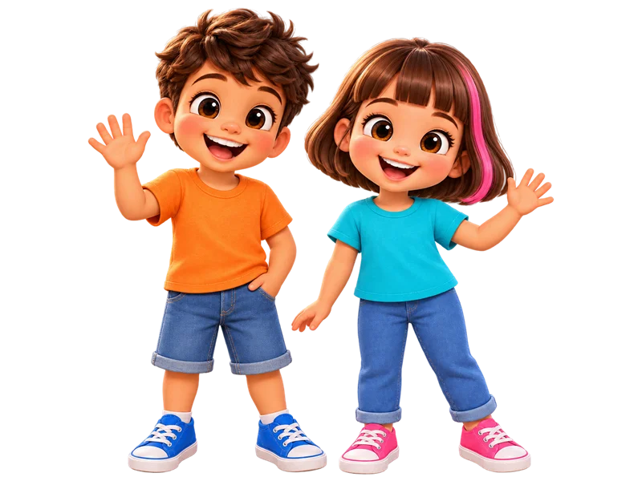
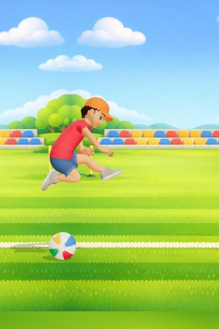
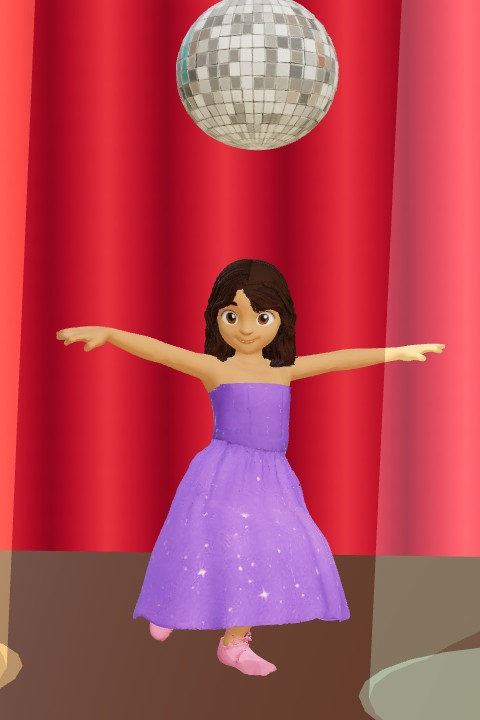
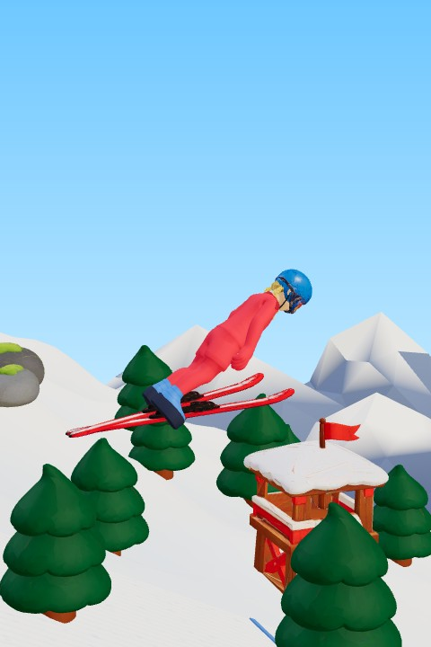
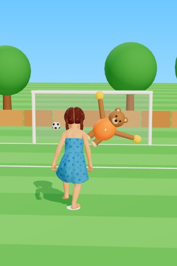

MiniMig™Test version
MiniMig™Test version
MiniMig™ – build your own figure and play with it
Build a MiniMig in 3D that looks like you, a friend or something completely made up. Breakdance on the street corner, put your own show together in the dance studio – and play little games you can’t lose. Along the way, children practise counting and logical thinking. A safe kids’ game for ages 3–6 – with no ads.
The basic version stays free. The full version will be a one-time purchase at launch.
It takes a little longer the first time, because the game has to download to your device. Wi-Fi is a good idea.










Try the test version on iPhone and iPad
MiniMig is in testing. Get it free through TestFlight and play with the whole app – including the Christmas edition with Advent presents. When MiniMig comes to the App Store (expected January 2027), the basic version will still be free, and the full version will be a one-time purchase. Thank you for testing and telling us what you think.
- Get the free TestFlight app from the App Store.
- Tap the button below on your iPhone or iPad.
- Tap Accept and Install.
🧪 The test version opens soonThe link works as soon as Apple has approved the test version
The basic version stays free. The full version will be a one-time purchase at launch.
Questions about the test version
What is TestFlight?
Apple’s own programme for testing apps before they come to the App Store. Get the free TestFlight app from the App Store, then open our link.
Does it cost anything?
No, not during the test period. The whole app is open.
What happens when MiniMig comes to the App Store?
The basic version is still free. The full version will be a one-time purchase. We will let you know when the App Store version is ready.
When will it be in the App Store?
We expect January 2027. The exact date depends on the last approvals.
Will my child’s figures be kept?
That is our aim. We will test it before the launch and tell you if you need to do anything.
Why does the test version stop?
Apple lets a test version run for 90 days. When a new one comes, TestFlight updates it.
Where do I send feedback?
Take a screenshot in the app and send it through TestFlight, or write in the test group or on the Facebook page.
What about my child’s data?
MiniMig only keeps data on the device. Nothing is sent to us.
Become a test family
Join our private Facebook group. You’ll be the first to hear when a new version of MiniMig is out, and you can tell us what your children love – and what is tricky. The group is for adults, and we never share photos or names of children. You’re welcome to write in English.
Become a test family on FacebookPrivate group – you ask to join
Play that teaches
MiniMig is above all fun. But small bits of learning are hidden in the play, so children practise without even noticing.
Counting and adding up
The stars from the games turn into play coins. In the Star Shop your child pays with coins of 1, 2, 5, 10 and 20 and practises counting and adding up. A help button lays out the coins for the youngest. Real money is never used.
Letters and first words
Every button has both a picture and a short word – Hair, Clothes, Jump, Dance. The picture helps the youngest, and the word points the way to reading, so your child starts to recognise letters and whole words. Under Name your child can write their own name on the top, letter by letter, and hear it read aloud.
Logical thinking
What do you need to wear? Before a game your child dresses the figure in the right gear: a helmet, knee and elbow pads for skateboarding, swimwear and goggles in the sea, a space suit and helmet in space, and a ski suit and goggles for the ski jump.
Rhythm and order
In Cypher your child builds a breakdance round from four moves in the right order, and in the Dance studio up to five dances are put together into a show. The music follows the beat of the dance.
Dance words from the real world
The dance moves have their real names: toprock, footwork, power move, freeze, shuffle and twist. The whole game can also be switched to Danish.
Pets that come along
Save up coins in the Star Shop and buy a cat, a dog or a rabbit. Your pet follows your MiniMig around and joins in most of the games. The cat jumps and runs along, sits and watches while you do somersaults, and swishes its tail while it waits for you.


Lots of choices
Skin, hair, eyes, mouth, tops, pants, dresses, shoes, glasses, hats and things to hold – and gear for the games: a skate helmet, swimwear, a space suit, a ski suit and much more. Backgrounds from a palace to outer space.
Move and dance
Wave, jump, run, cheer and do somersaults. Breakdance in the ring in Cypher, or put your own show together from hip hop, show, fun dances and break in the Dance studio – with three beats to choose from.
Little games
Jump the ball, skateboard, snowboard, ski jump, treasure hunt, swim world, space trip, hide and seek and penalty kick – at five levels of difficulty, and you can’t lose. Before each game your MiniMig puts on the right gear.
Stars and coins
The stars from the games turn into coins – the harder the level, the more you get. Pay with coins in the Star Shop for a crown, a princess dress or a pet that follows you.
A MiniMig for every child
Brothers and sisters on the same iPad each get their own figure, name and stars. A child can record their own name.
Safe for children
No ads, no account and no data collection. Everything is kept on the device only – nothing is sent to us.